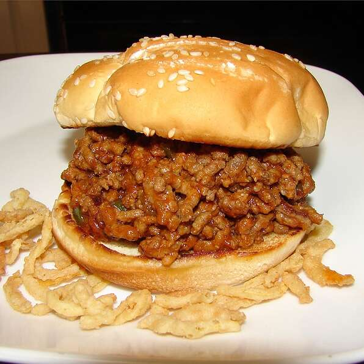

Sloppy Joes

Sloppy Joes Recipe
Delicious Sloppy Joes in just 6 ingredients! Always loved by adults and kids alike! For best results serve on toasted sesame seed bun.
For leftovers, store in tupperware container and reheat leftovers in microwave for 45-60 seconds.
Ingredients
- 1 pound ground beef
- 1/2 cup onion, chopped
- 1 (8 ounce) can tomato sauce
- 1/3 cup ketchup
- 2 tablespoons brown sugar
- 1 tablespoon apple cider vinegar
Steps
- Place the ground beef and chopped onion in a skillet over medium heat;
cook and stir until the beef is completely browned and the onions are translucent.
- Drain the fat from the skillet and return it to medium heat. Stir in the tomato sauce, ketchup, brown sugar, and vinegar.
- Reduce heat to medium low and simmer 20 minutes.